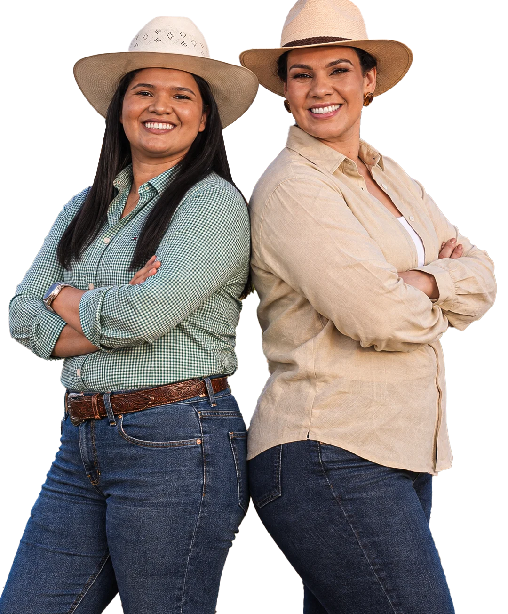
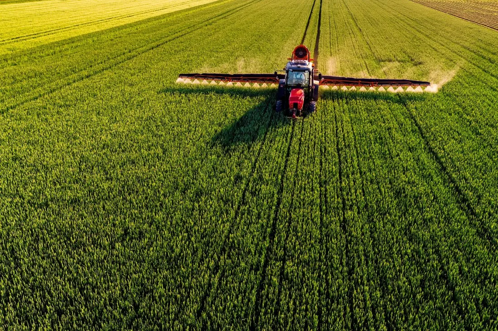
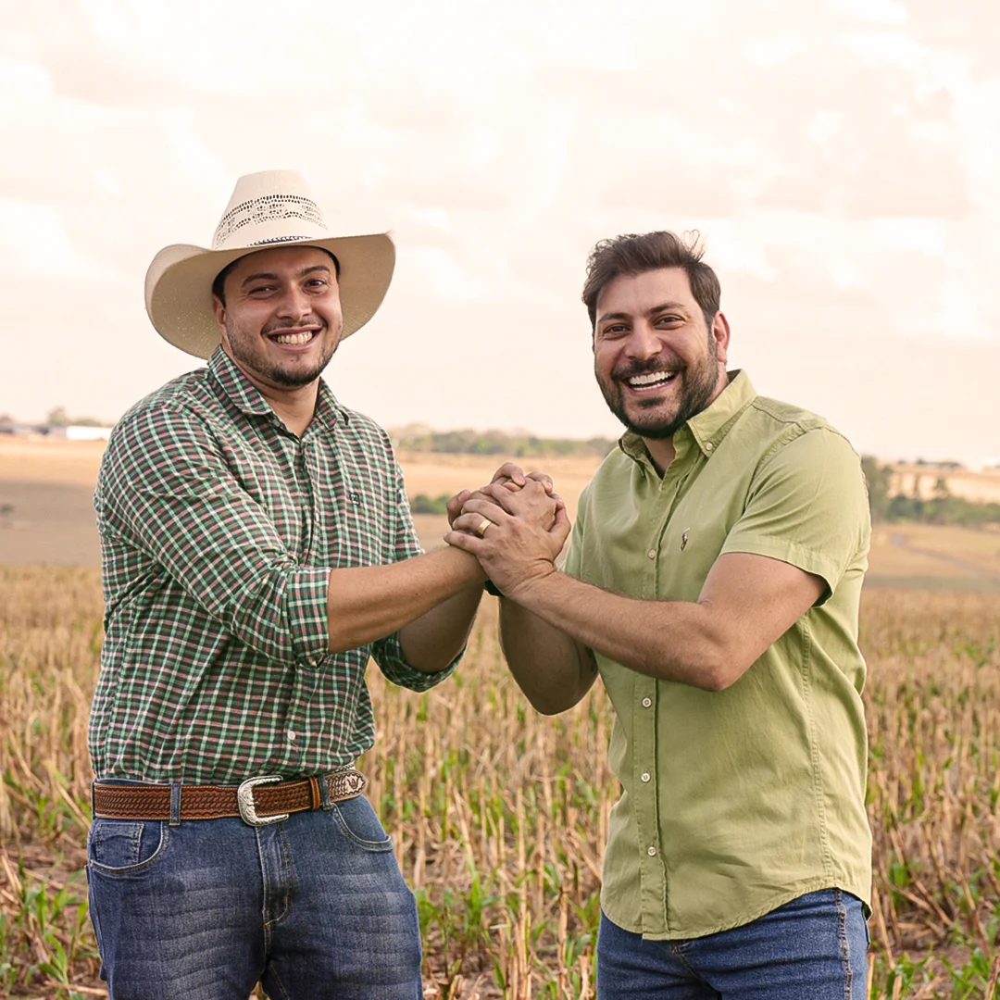
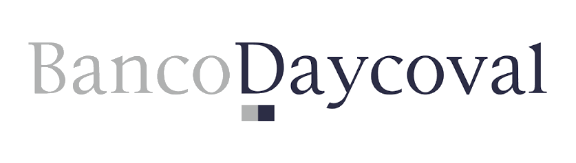
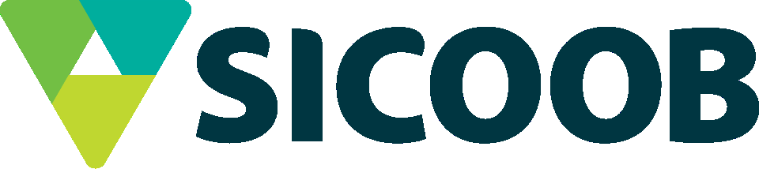
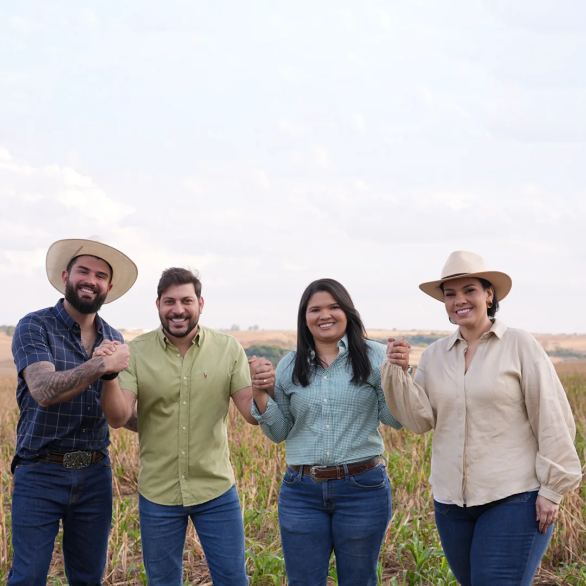

Capital para fortalecer quem produz.
Estruturação de crédito para produtores rurais e empresas do agronegócio, com assessoria técnica do diagnóstico à execução da operação.
Soluções de crédito
Crédito Plano Safra e soluções financeiras para o agro
No âmbito do Plano Safra e de outras fontes de capital do mercado, combinamos as linhas abaixo às garantias e à realidade financeira disponíveis em cada operação.
Crédito Estruturado via Fundos de Investimento
Para operações que exigem maior volume, prazo ou flexibilidade, avaliamos alternativas com acesso a fundos de investimento e outras fontes de capital privado, sempre compatibilizadas com a capacidade de pagamento do cliente. É a solução mais procurada pelos clientes da BS Agro Capital.


Linha de crédito
Custeio Rural
Financia as despesas do ciclo produtivo em andamento, como insumos, sementes, defensivos e mão de obra, cobrindo o intervalo entre o plantio e a colheita.
Linha de crédito
Crédito para Investimentos
Voltado à ampliação ou modernização da estrutura produtiva: máquinas, equipamentos, benfeitorias, irrigação, armazenagem própria e outras melhorias de médio e longo prazo.
Linha de crédito
Comercialização
Dá suporte financeiro entre a colheita e a venda da produção, viabilizando armazenagem estratégica e reduzindo a pressão por uma venda imediata em condições desfavoráveis.
Linha de crédito
CPR (Cédula de Produto Rural)
Título de crédito emitido pelo produtor que representa uma promessa de entrega futura de produto rural, ou de pagamento em espécie equivalente, utilizado para antecipação de recursos junto a compradores ou instituições financeiras.
Atuação especializada
Estruturas para situações mais específicas
Além das linhas de crédito acima, atuamos em duas frentes que costumam exigir uma estruturação mais criteriosa.

Garantia real
Crédito com garantia de imóvel rural e urbano
Estruturamos crédito com garantia real, imóvel rural ou urbano, a partir da análise do bem, da capacidade produtiva e da situação financeira do cliente. Cada operação é construída de forma individual, com condições definidas junto às fontes de capital durante a estruturação.
Recuperação Judicial
Operações para produtores e empresas em Recuperação Judicial
Atuamos em cenários de maior complexidade, conectando capacidade produtiva, patrimônio e estratégia financeira para preservar a atividade do cliente. A partir de um diagnóstico da situação financeira e patrimonial, identificamos alternativas de capital que reorganizam passivos e abrem caminho para um novo ciclo de crescimento.
Rede de capital
Parceiros e instituições financeiras
Atuamos em conexão com bancos, fundos de investimento e outras instituições financeiras do mercado, sempre em busca da estrutura mais compatível com cada operação.



Como funciona
Um processo técnico, do diagnóstico à execução
Do diagnóstico inicial até a efetivação, cada etapa é construída a partir da realidade financeira e patrimonial apresentada pelo cliente.
-
01
Diagnóstico da situação financeira e patrimonial
Levantamento da situação financeira e patrimonial do cliente, incluindo passivos existentes, patrimônio disponível e contexto da operação, como base para qualquer estruturação.
-
02
Análise de capacidade produtiva e alternativas de garantia
Avaliação da capacidade produtiva envolvida e dos bens que podem ser oferecidos em garantia, rural ou urbano, para identificar quais alternativas de capital são compatíveis com a operação.
-
03
Estruturação da operação e conexão com fontes de capital
Construção da estrutura financeira mais adequada ao caso e conexão com as fontes de capital disponíveis no mercado, alinhando a operação à realidade patrimonial e produtiva do cliente.
-
04
Acompanhamento da execução
Acompanhamento das etapas necessárias até a efetivação da operação, mantendo o cliente informado sobre o andamento e as definições ao longo do processo.
Quem somos
Como surgiu a BS Agro Capital
A BS Agro Capital é uma empresa familiar que carrega sua origem no próprio nome: Brandão Salles. Nasceu da trajetória de Évellyn Brandão, que construiu quase uma década de experiência no mercado financeiro, sendo mais de oito anos no Itaú Unibanco, entre relacionamento, negócios e crédito, com certificação CPA-20, participação em comitês de crédito e na estruturação de mais de R$ 200 milhões em operações.
Ao assumir a posição de Gerente Regional Agro, Évellyn deixou Minas Gerais com a família rumo a Goiás, um dos principais polos do agronegócio brasileiro. Na prática com produtores rurais e empresas do setor, viu de perto a dificuldade de acessar crédito estruturado. Dessa percepção, somada à paixão da família Brandão Salles pelo agro, nasceu a BS Agro Capital: conhecimento técnico do mercado financeiro e uma rede estratégica com cooperativas de crédito e fundos de investimento, a serviço de quem produz.

A trajetória por trás da BS Agro Capital
+10 anos
De experiência no mercado financeiro
+800 clientes
Atendidos ao longo da carreira
+de R$ 200m
Em operações de crédito ao longo da carreira
Propósito
O que a BS Agro Capital faz pelo seu negócio
Transformamos o seu patrimônio e a sua capacidade produtiva em crédito estruturado, pra você ter caixa pra operar, dívidas sob controle e fôlego pra seguir produzindo e crescendo.
Caixa pra operar
Transformamos seu patrimônio e sua capacidade produtiva em dinheiro em caixa pra tocar a safra ou o negócio.
Dívidas sob controle
Reorganizamos suas dívidas num formato que cabe no seu fluxo de caixa, sem sufocar a operação.
Produção sem interrupção
Estruturamos a operação pra você continuar plantando, colhendo e vendendo, mesmo em momentos mais difíceis.
Fôlego pra crescer
Com as contas organizadas, você ganha base financeira pra investir e crescer na próxima safra.
Diferenciais
O que sustenta cada estruturação
Unimos conhecimento do agro, análise financeira e acesso a diferentes fontes de capital para construir operações de acordo com a realidade de cada cliente.
Perguntas frequentes
Tire suas dúvidas sobre o processo
Quem pode solicitar uma análise de crédito com a BS Agro Capital?
Produtores rurais e empresas do agronegócio que buscam estruturar crédito. Basta preencher o formulário abaixo ou falar direto pelo WhatsApp, sem compromisso.
Quais linhas de crédito a BS Agro Capital estrutura?
Custeio Rural, Crédito para Investimentos, Comercialização, CPR (Cédula de Produto Rural) e Crédito Estruturado via Fundos de Investimento — além de crédito com garantia de imóvel rural e urbano e operações para quem está em Recuperação Judicial.
A BS Agro Capital empresta o dinheiro diretamente?
Não. Atuamos em conexão com bancos, fundos de investimento, cooperativas de crédito e outras instituições financeiras do mercado, estruturando a operação e conectando o cliente à fonte de capital mais compatível com a sua realidade.
É preciso ter garantia para conseguir o crédito?
Depende da linha e da operação. Trabalhamos tanto com garantia real (imóvel rural ou urbano) quanto com instrumentos como a CPR, que usa a própria produção futura como lastro. Cada operação é desenhada de acordo com o patrimônio, a garantia disponível e a realidade financeira do cliente.
Como funciona o processo, do diagnóstico até a execução?
Em quatro etapas: diagnóstico da situação financeira e patrimonial, análise de capacidade produtiva e alternativas de garantia, estruturação da operação com conexão às fontes de capital, e acompanhamento da execução até a efetivação.
A empresa atende quem está em Recuperação Judicial?
Sim. Atuamos em cenários de maior complexidade, conectando capacidade produtiva, patrimônio e estratégia financeira para preservar a atividade do cliente e reorganizar passivos.
BS Agro Capital. Crédito estruturado para quem produz.
Preencha os dados da sua operação, sem compromisso, ou fale agora mesmo com um especialista pelo WhatsApp.
Você está perto de estruturar seu crédito.
Preencha os dados da sua operação, sem compromisso.